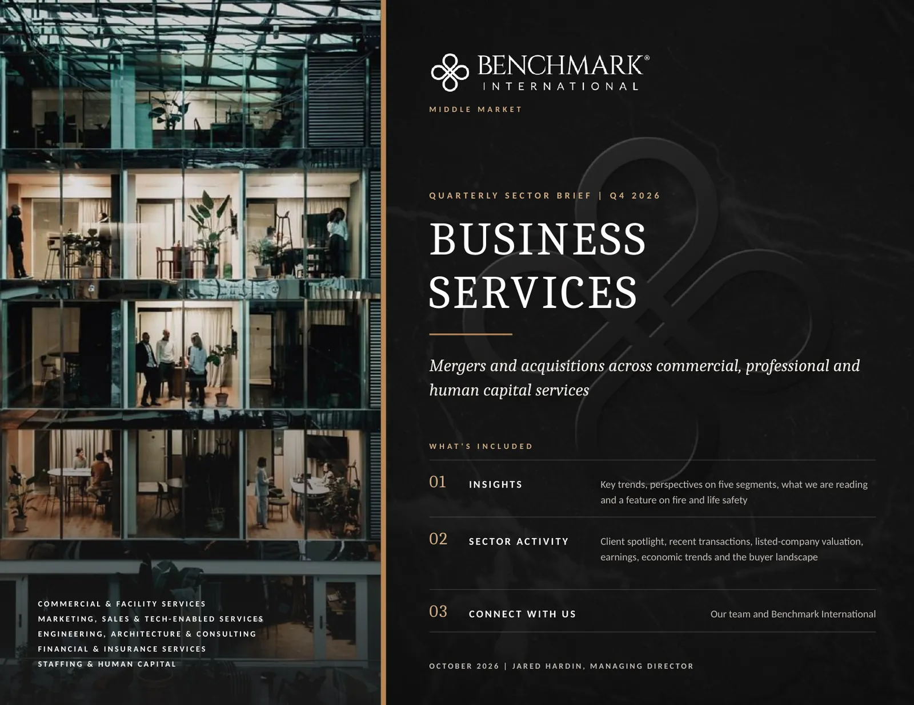
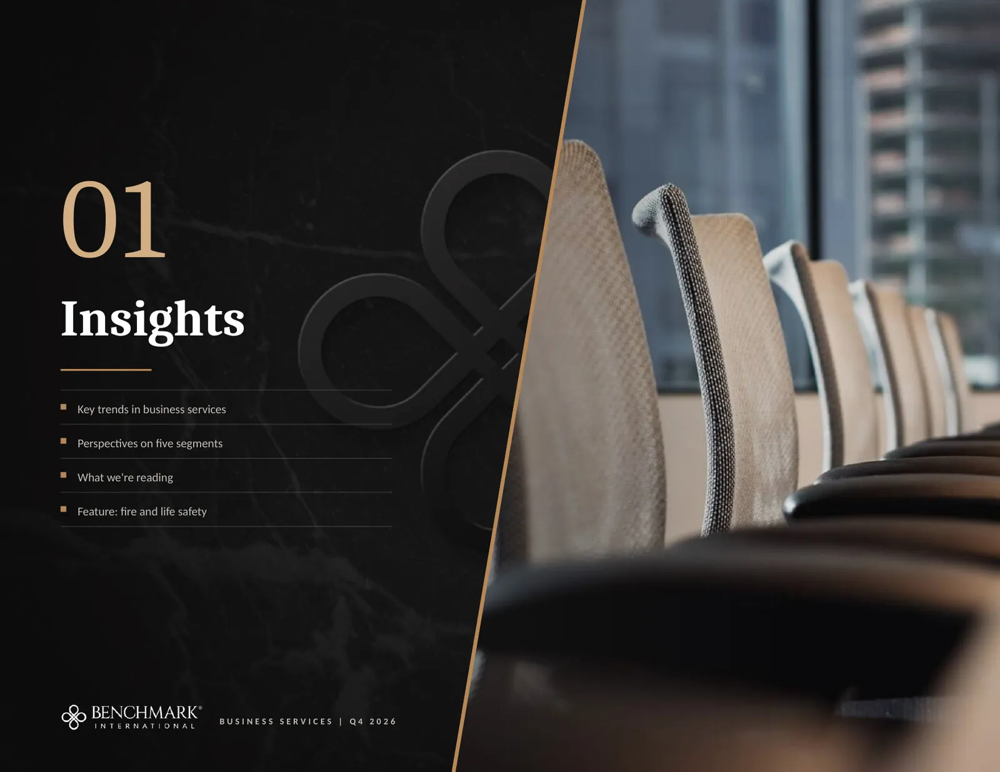

This is the Business Services Q4 2026 sector brief, page by page, exactly as it appears in the PDF. Links on each page open their sources, and the text of every page, with its tables and chart data, is below each page.

Read the text of this page
COMMERCIAL & FACILITY SERVICES
MARKETING, SALES & TECH-ENABLED SERVICES
ENGINEERING, ARCHITECTURE & CONSULTING
FINANCIAL & INSURANCE SERVICES
STAFFING & HUMAN CAPITAL
BENCHMARK CAPITAL MARKETS
QUARTERLY SECTOR BRIEF | Q4 2026
BUSINESS
SERVICES
Mergers and acquisitions across commercial, professional and human capital services
WHAT'S INCLUDED
INSIGHTS
Key trends, perspectives on five segments, what we are reading and a feature on fire and life safety
SECTOR ACTIVITY
Client spotlight, recent transactions, listed-company valuation, earnings, economic trends and the buyer landscape
CONNECT WITH US
Our team and Benchmark International
OCTOBER 2026 | JARED HARDIN, MANAGING DIRECTOR

Read the text of this page
Key trends in business services
Perspectives on five segments
What we're reading
Feature: fire and life safety
BUSINESS SERVICES | Q4 2026
Read the text of this page
Six developments are shaping demand, pricing and deal activity across the five segments as the fourth quarter begins.
Inspection-driven revenue draws the most active buyers
22
Pye-Barker Fire & Safety completed 22 acquisitions in the first half of 2026 after 57 in 2025 (Pye-Barker). APi Group grew 10.1% organically in the second quarter and reported a backlog above $5 billion (APi Group).
Acquirers compete most actively for contracted inspection and service work.
Financing became more expensive in the third quarter
4.99%
The Federal Reserve raised its target range to 3.75% to 4.00% on September 16 (Federal Reserve), and the 10-year Treasury yield averaged 4.99% in September (FRED). Debt on platform acquisitions fell to 2.9x EBITDA from 3.4x (GF Data via ACG).
Costlier debt puts a premium on documented earnings and contracted customers.
Engineering backlogs run a year deep and licensed staff are scarce
88%
The median engineering firm holds 12 months of backlog, and 88% of firms report open positions (ACEC). Bernhard Capital agreed to buy Bowman for about $1.0 billion of enterprise value, a 58% premium (Bowman).
Buyers of engineering firms are paying for licensed staff and funded backlog.
Softer insurance pricing has slowed broker organic growth
−2%
Commercial premiums fell 2% on average in the second quarter, with property down 6.3% (Insurance Journal). Aon agreed to buy USI for $17 billion in cash (Insurance Journal, September 21).
Small commercial and casualty accounts are seeing the least pricing pressure.
Staffing revenue is growing for the first time in three years
+5%
Median staffing revenue grew 5% in August, the highest reading since late 2022 (Staffing Industry Analysts). Temporary help employment remains 21% below its March 2022 peak (BLS via FRED).
Skilled trades, engineering and healthcare placements are drawing the acquirers.
Advertising is growing while AI changes what agencies sell
+9.6%
US advertising revenue is forecast to grow 9.6% in 2026 (MediaPost). Marketing budgets hold at 7.8% of company revenue, with 15.3% of those budgets directed to AI (Marketing Dive).
Retained clients, first-party data and measurable outcomes hold their value.
WHAT IT MEANS
FOR OWNERS
Buyers pay most readily for revenue that repeats under contract. Completed middle-market transactions averaged 7.0x EBITDA in the second quarter (GF Data via ACG), the median multiple on sales of $5 million to $50 million reached 5.8x (IBBA and M&A Source), and 87% of sales above $5 million drew three or more offers (IBBA and M&A Source release).
Figures are the latest published as of October 7, 2026 and each is linked to its source. The 10-year Treasury figure is the monthly average for September 2026. EBITDA is earnings before interest, taxes, depreciation and amortization.
Read the text of this page
Each segment has its own buyers and drivers, and the same five tests decide how a buyer values a business in any of them.
COMMERCIAL & FACILITY SERVICES
Contracted, inspection-driven revenue is drawing the most active consolidators.
MARKET SIZE AND GROWTH
Recurring monthly revenue at the 100 largest security dealers rose 7% to $740 million in 2025 (SDM), and SGS grew 5.6% organically in the first half (SGS).
ACTIVE BUYERS
Pye-Barker, APi Group, AI Fire and Cintas in fire and safety; Allied Universal in guarding; DEX Imaging and UBEO in office technology; SGS and TIC Solutions in testing.
WHAT BUYERS REWARD
Inspection, monitoring and service contracts that renew each year, and licenses held by the company.
MARKETING, SALES & TECH-ENABLED SERVICES
Advertising demand is strong, and specialists with data or a vertical focus are in demand.
MARKET SIZE AND GROWTH
US internet advertising revenue reached $294.6 billion in 2025, up 13.9% (IAB and PwC), and promotional products sales reached a record $27.7 billion (ASI).
ACTIVE BUYERS
Sponsor-backed agency platforms such as OneMagnify, Power Digital and Wpromote; Publicis and Havas; Accenture and Cognizant; HALO and Proforma in promotional products.
WHAT BUYERS REWARD
Retained client relationships, depth in one vertical, proprietary data and a team beyond the founder.
ENGINEERING, ARCHITECTURE & CONSULTING
Backlogs run a year deep, and private capital is paying for licensed talent.
MARKET SIZE AND GROWTH
The 500 largest design firms reported $158.7 billion of revenue, up 7.4% (ENR), and 447 transactions were announced among design and construction firms in 2025 (PSMJ).
ACTIVE BUYERS
Bernhard Capital Partners; Ardurra, owned by Littlejohn & Co.; Salas O'Brien; SAM Companies; Pape-Dawson; J.S. Held in forensic engineering.
WHAT BUYERS REWARD
Funded backlog of a year or more, licensed staff and a second generation of principals.
FINANCIAL & INSURANCE SERVICES
Softer premiums are slowing organic growth while the largest brokers keep buying.
MARKET SIZE AND GROWTH
Managing general agents wrote $108.7 billion of premium in 2025, up 17.8% (Risk & Insurance), and advisory firm sales moved $342.9 billion of client assets in the first half (WealthManagement.com).
ACTIVE BUYERS
Aon, Gallagher, Inszone, EPIC, King Risk Partners and World Insurance Associates in brokerage; Hightower and Mercer Advisors in wealth.
WHAT BUYERS REWARD
Recurring commissions and fees with high retention, and producers under contract beyond the owner.
STAFFING & HUMAN CAPITAL
Staffing revenue is growing for the first time in three years, led by skilled work.
MARKET SIZE AND GROWTH
US staffing sales were $113.5 billion in 2025, down 8.5% (ASA), and industrial staffing revenue is now forecast to grow 7% in 2026 (Staffing Industry Analysts).
ACTIVE BUYERS
Korn Ferry, Aerotek, ALKU, CHG Healthcare and Airswift, with sponsor-backed specialists in skilled trades and engineering.
WHAT BUYERS REWARD
Specialty placements, gross margin held through the downturn and direct client relationships.
ACROSS ALL FIVE SEGMENTS
Five tests buyers apply
1
Revenue that repeats under contract
Service agreements, retainers and renewals.
2
Licensed, certified or tenured people
Credentials held by the company.
3
Management beyond the owner
Leaders who hold the client relationships.
4
No client above a fifth of revenue
One dominant account lowers the price.
5
Margins that held through the downturn
Proof that pricing and staffing can adjust.
Active buyers are drawn from transactions announced between October 2025 and October 2026 and cited in the full Q4 2026 report. Company names are the property of their owners and are shown for identification.
Read the text of this page
Six primary sources and trade reports from the third quarter, with the reason each one matters to an owner.
INDUSTRY READING
ACEC RESEARCH INSTITUTE
August 27, 2026
Engineering firms hold a year of work and expect a slower economy
The third-quarter survey of engineering firms recorded a median backlog of 12 months, with the strongest sentiment in data centers and in water and wastewater. The same firms put the odds of a recession within six months at 41%, and 88% reported open positions.
Key takeaway. Backlog and a bench of licensed engineers are the first two facts a buyer will test.
READ HERE
STAFFING INDUSTRY ANALYSTS
September 29, 2026
Staffing revenue grows 5% at the median, the best reading since 2022
The August Pulse Survey of 128 staffing firms recorded median revenue growth of 5% from a year earlier. Engineering staffing led at 10% and industrial staffing followed at 8%, after three years in which industry revenue declined.
Key takeaway. The recovery is strongest in the skilled categories where this year's acquisitions are concentrated.
READ HERE
INSURANCE JOURNAL
August 20, 2026
Commercial premiums fall 2% as property pricing softens
The Council of Insurance Agents & Brokers recorded an average premium decline of 2% in the second quarter. Large accounts fell 3.7% and small accounts fell 0.5%, and commercial property fell 6.3% while umbrella and commercial auto continued to rise.
Key takeaway. Account size and line of business now explain most of the difference in agency growth.
READ HERE
ECONOMY AND DEAL MARKET
REUTERS
October 1, 2026
Global deal value falls 41% in the third quarter
Announced global M&A fell to $993 billion in the third quarter, the first quarter under $1 trillion since mid-2025, after a record first half. The report attributes the decline to rising borrowing costs.
Key takeaway. The slowdown is concentrated in the largest transactions. Add-on purchases by existing platforms made up about three-quarters of second-quarter buyouts (PitchBook).
READ HERE
FEDERAL RESERVE
September 16, 2026
The Federal Open Market Committee raises its target range
The committee raised the target range for the federal funds rate by 25 basis points to 3.75% to 4.00% and stated that inflation remains elevated. Senior debt on middle-market acquisitions was already priced at 7.8% in the second quarter.
Key takeaway. Lenders are advancing less debt against each dollar of earnings, at 2.9x EBITDA on platform deals (GF Data via ACG).
READ HERE
IBBA AND M&A SOURCE
Market Pulse, second quarter 2026
Smaller transactions reach their highest multiple since early 2022
The quarterly survey of business brokers and M&A advisors put the median multiple on sales of $5 million to $50 million at 5.8x EBITDA, up from 5.5x. Sellers received 83% to 92% of the price in cash at closing.
Key takeaway. Competition for well-prepared businesses is intact, with three or more offers on 87% of sales above $5 million (survey release).
READ HERE
Each summary restates the source in our own words and links to it, and each heading is our own description of the piece.
Read the text of this page
Inspection and service revenue explains why fire protection and security companies have the most active acquirers in business services.
SECTOR FEATURE
Why fire and life safety has the most active acquirers
Pye-Barker alone bought 79 fire and security companies in the eighteen months to June 2026, and APi Group, Sciens Building Solutions and AI Fire are buying alongside it. Three features of the work explain the interest.
1
The work is contracted or mandated
Inspection, testing and monitoring repeat on a schedule, so the revenue continues when new construction slows.
2
Each acquired branch adds density
A buyer that already runs routes in a region can serve an acquired book of accounts with the technicians it has.
3
Inspection leads the customer relationship
APi bought CertaSite, with about $90 million of revenue, because the business leads with inspections and earns repair and service work from them.
22
Pye-Barker acquisitions in the first half of 2026, after 57 in 2025 (Pye-Barker; Security Systems News)
10.1%
APi Group organic revenue growth in the second quarter, with backlog above $5 billion (APi Group)
60%+
Share of revenue APi aims to earn from inspection and service (APi Group, December 10, 2025)
$740M
Recurring monthly revenue of the 100 largest security dealers in 2025, up 7% (SDM)
Route-based and inspection-driven companies trade above labor-intensive ones
Enterprise value to trailing EBITDA of six listed services companies. Source: StockAnalysis
| Value | |
|---|---|
| Cintas | 26.0x |
| APi Group | 19.3x |
| Rollins | 18.0x |
| FirstService | 14.1x |
| ABM Industries | 10.1x |
| BrightView | 5.9x |
Cintas and Rollins run recurring service routes, and APi Group is built around inspection and service. ABM and BrightView depend more heavily on labor hours.
RECENT FIRE AND SECURITY TRANSACTIONS
BUYER
TARGET (LINKED)
WHAT THE TARGET DOES
DATE
Pye-Barker Fire & Safety
Family-owned alarm, access control and video company, New Jersey
Sep 2026
Pye-Barker Fire & Safety
Fire suppression, Pacific Northwest
Aug 2026
Allied Universal
Aegis Protective Services and Admiral Security Services
Guard services and security technology
Jun 2026
Sciens Building Solutions
Fire protection
Jan 2026
APi Group
Fire and life safety inspection, Midwest
Dec 2025
Purchase prices were not disclosed for these transactions. Benchmark International's own fire and life safety sales appear in the client spotlight in the next section.
WHAT A BUYER
WILL ASK
An owner in this field should expect to be asked what share of revenue comes from inspection, monitoring and service agreements, whether the licenses are held by the company or by the owner personally, and how long the technicians have been with the business.
Listed multiples were retrieved on October 7, 2026 and use reported EBITDA. Rollins is a pest control company and is included as a route-based comparison. Company names are the property of their owners.
Read the text of this page
Client spotlight
Select recent M&A transactions
Benchmark International transactions
Public companies: valuation and operating metrics
Earnings and commentary
Economic trends
Landscape of select participants
BUSINESS SERVICES | Q4 2026
Read the text of this page
Benchmark International advised the owners of three fire protection businesses that were bought by operating companies already in the field.
FPS Technologies
ACQUIRED
BY
Cintas
FPS Technologies and Cintas
BUSINESS OVERVIEW
FPS Technologies designs, installs and maintains fire protection and safety systems from Oklahoma City and provides emergency service around the clock.
THE BUYER
Cintas is a listed company that serves more than one million business customers over approximately 12,500 local routes (Cintas annual report).
WHAT THE BUYER ADDED
A regional book of recurring fire system inspection and maintenance work.
Fire Systems Technology
ACQUIRED
BY
AI Fire
Fire Systems Technology and AI Fire
BUSINESS OVERVIEW
Fire Systems Technology is a full-service fire sprinkler contractor in Arkansas that installs, inspects, maintains and renovates systems.
THE BUYER
AI Fire is a fire and life safety platform backed by private equity that has been adding regional contractors.
WHAT THE BUYER ADDED
Sprinkler installation and inspection capacity in Arkansas.
HIGH TECH SOLUTIONS
SYSTEMS GROUP
ACQUIRED
BY
AI Fire
High Tech Solutions and AI Fire
BUSINESS OVERVIEW
High Tech Solutions - Systems Group designs, installs and services special systems for customers in Montana and Wyoming.
THE BUYER
AI Fire made this purchase in addition to its acquisition of Fire Systems Technology.
WHAT THE BUYER ADDED
Special systems capability and a position in Montana and Wyoming.
WHAT THE THREE SALES HAD IN COMMON
Service alongside installation
Each business maintained, inspected or serviced the systems it installed, which gave the buyer continuing work with the same customers.
A defined home region
Oklahoma City, Arkansas, and Montana and Wyoming each gave the buyer a territory to add to its existing coverage.
A buyer already in the field
Cintas and AI Fire both operate fire protection businesses, so each purchase extended a platform that was already in place.
Business descriptions are taken from the announcements published on benchmarkintl.com, which are linked from each card. Transaction values are not disclosed. Company names and marks are the property of their owners.
Read the text of this page
One transaction from each segment and one with disclosed economics, announced between June and October 2026.
SEPTEMBER 2026
COMMERCIAL & FACILITY SERVICES
UNION ALARMTRONIC
ACQUIRED
BY
PYE-BARKER FIRE & SAFETY
Pye-Barker adds a family-owned alarm company in New Jersey
Union AlarmTronic provides alarm, access control and video systems. The purchase follows 22 acquisitions by Pye-Barker in the first half of 2026 and 57 in 2025 across fire and security (Pye-Barker).
WHAT IT SHOWS Family-owned alarm and fire companies with monitoring revenue continue to find a buyer quickly.
OCTOBER 2026
MARKETING, SALES & TECH-ENABLED SERVICES
EAST BEACH SPECIALTIES
ACQUIRED
BY
ZEBRA MARKETING
Zebra Marketing agrees to acquire East Beach Specialties
East Beach Specialties is a promotional products distributor on the Mississippi Gulf Coast (ASI). Distributor sales grew 2.5% in the second quarter, and firms under $1 million of revenue were flat (ASI Central).
WHAT IT SHOWS Scale is separating promotional products distributors, and smaller firms are joining larger ones.
AUGUST 2026
ENGINEERING, ARCHITECTURE & CONSULTING
BOWMAN CONSULTING GROUP
ACQUIRED
BY
BERNHARD CAPITAL PARTNERS
Bernhard Capital agrees to buy Bowman for about $1.0 billion
Bowman is a founder-led engineering firm with more than 2,500 employees and a backlog of $658.7 million, up 50.3% (Bowman results). The offer of $43.00 per share is a 58% premium to the prior close (Bowman).
WHAT IT SHOWS Private capital is paying for licensed staff and funded backlog.
AUGUST 2026
FINANCIAL & INSURANCE SERVICES
HARRIS INSURANCE SERVICES
ACQUIRED
BY
INSZONE INSURANCE SERVICES
Inszone acquires a three-generation agency in Tulsa
Harris Insurance Services was founded in 1925 in West Tulsa, Oklahoma (Insurance Business). King Risk Partners, EPIC and World Insurance Associates each bought a long-established agency in the weeks that followed (Insurance Journal).
WHAT IT SHOWS Multi-generation agencies are selling to consolidators while premium rates soften.
SEPTEMBER 2026
STAFFING & HUMAN CAPITAL
LABORWORX
ACQUIRED
BY
VERIWORKS
VeriWorks enters data center construction staffing
LaborWorx supplies skilled trades for data center construction (Staffing Industry Analysts). The 2026 forecast for industrial staffing revenue was raised to growth of 7% from 1% in September (SIA forecast).
WHAT IT SHOWS Skilled trades tied to data center, power and factory construction are drawing buyers.
JUNE 2026
STAFFING & HUMAN CAPITAL
AMS
ACQUIRED
BY
KORN FERRY
Korn Ferry agrees to buy AMS at about 11 times EBITDA
The enterprise value of £850 million, roughly $1.1 billion, compares with about $650 million of fee revenue and about $100 million of run-rate adjusted EBITDA (Korn Ferry).
WHAT IT SHOWS Long-term outsourcing contracts earned a multiple in line with the 10.8x median of far larger listed staffing companies.
Transaction values are as reported by the linked source. The listed staffing median is on the valuation page of this brief. Company names are the property of their owners. Transactions advised by Benchmark International follow on the next page, and further transactions in each segment are in the full report.
Read the text of this page
Marketing and sales services lead with 23 closed transactions, commercial and facility services follow with 21, and most buyers were operating companies.
TRAILING 24 MONTHS
67
transactions closed in these five segments
142
further engagements in progress as of October 1, 2026, of which 69 are on the market
44
sellers named in the full report, more than half of them bought by a company in their own or an adjacent field
Ranked the leading privately owned sell-side M&A advisor in the world in PitchBook's Q2 2026 Global League Tables (Benchmark International).
FPS Technologies
HAS BEEN ACQUIRED BY
Cintas
Fire protection and safety systems design, installation and service
COMMERCIAL & FACILITY
Fire Systems Technology
HAS BEEN ACQUIRED BY
AI Fire
Full-service fire sprinkler contractor, Arkansas
COMMERCIAL & FACILITY
Pacific Green Protection
HAS BEEN ACQUIRED BY
Cresswell Ventures
Armed and unarmed security services
COMMERCIAL & FACILITY
BRIGGS ENGINEERING & TESTING
HAS BEEN ACQUIRED BY
PHENNA GROUP
Inspection, testing and quality control engineering
COMMERCIAL & FACILITY
Telmark Sales Solutions
HAS BEEN ACQUIRED BY
Sentinel Capital Partners
Consumer packaged goods sales brokerage, sold to Sentinel's Market Performance Group
MARKETING, SALES & TECH-ENABLED
MartianCraft
HAS BEEN ACQUIRED BY
Walnut Capital Partners
Software design and development agency
MARKETING, SALES & TECH-ENABLED
SnailWorks
HAS BEEN ACQUIRED BY
Beacon Software
Mail-tracking software for direct mailers
MARKETING, SALES & TECH-ENABLED
HAS BEEN ACQUIRED BY
Retail Rex Capital
Promotional products and marketing services
MARKETING, SALES & TECH-ENABLED
SJB GROUP
HAS BEEN ACQUIRED BY
SURVEYING AND MAPPING (SAM)
Civil engineering firm, Baton Rouge, Louisiana
ENGINEERING & ARCHITECTURE
ENGINEERED BUILDING SYSTEMS
HAS BEEN ACQUIRED BY
RTM ENGINEERING CONSULTANTS
Mechanical, electrical and plumbing engineering, Northern Kentucky
ENGINEERING & ARCHITECTURE
ALTAIR ASSOCIATES
HAS BEEN ACQUIRED BY
CENTRI BUSINESS CONSULTING
Underwriting and claims review for insurers and reinsurers
FINANCIAL & INSURANCE
MOKAVIA AEROSPACE
HAS BEEN ACQUIRED BY
HI-TEK
Aerospace engineering and technical contract staffing
STAFFING & HUMAN CAPITAL
Each tile links to the announcement on benchmarkintl.com. Twelve of the 44 named transactions are shown, and the rest are in the full report. Transactions closed in the 24 months to September 2026. Engagements in progress are shown in aggregate. Company names and marks are the property of their owners.
Read the text of this page
Listed multiples are lower than a year ago in all five segments, and each segment trades below its three-year median.
Share price change, past 52 weeks
Median of the listed companies in each segment
| Value | |
|---|---|
| Commercial & Facility | +4.1% |
| Marketing, Sales & Tech | -4.3% |
| Engineering & Architecture | -27.5% |
| Financial & Insurance | -16.1% |
| Staffing & Human Capital | +4.7% |
Shares rose over the year at 6 of 11 commercial and facility, 3 of 9 marketing, 1 of 8 engineering, 2 of 7 financial and insurance and 7 of 10 staffing companies.
Enterprise value to trailing EBITDA
Median multiple a year ago, today and over three years, same companies at each point
| A year ago | Today | Three-year median | |
|---|---|---|---|
| Commercial & Facility | 17.3x | 14.7x | 16.8x |
| Marketing, Sales & Tech | 8.4x | 8.0x | 9.4x |
| Engineering & Architecture | 18.0x | 15.2x | 18.1x |
| Financial & Insurance | 14.4x | 11.5x | 15.1x |
| Staffing & Human Capital | 13.4x | 10.8x | 12.4x |
26 of the 36 companies trade below their own three-year median multiple.
PRIVATE-DEAL REFERENCE POINTS
7.0x
Average for completed middle-market transactions in all industries, second quarter of 2026 (GF Data via ACG)
5.8x
Median for transactions of $5 million to $50 million in all industries, second quarter of 2026 (IBBA and M&A Source)
4.0x
Median for transactions of $2 million to $5 million in the same survey
Listed multiples describe companies many times larger than a founder-owned business.
LISTED COMPANIES IN EACH PEER GROUP, WITH ENTERPRISE VALUE TO TRAILING EBITDA
COMMERCIAL & FACILITY
Cintas 26.0x | APi Group 19.3x | UL Solutions 18.2x | Rollins 18.0x | SGS 15.4x | FirstService 14.1x | Intertek 13.0x | Mistras Group 10.5x | Bureau Veritas 10.4x | ABM Industries 10.1x | BrightView 5.9x | Eurofins n/m
MARKETING, SALES & TECH
Stagwell 11.3x | 4imprint 10.3x | Daktronics 9.0x | Accenture 8.2x | Omnicom 7.7x | Cognizant 6.7x | Advantage Solutions 5.8x | Dentsu 4.5x | Publicis n/m | WPP n/m
ENGINEERING & ARCHITECTURE
Bowman Consulting 21.8x | Jacobs 18.0x | Willdan Group 16.1x | Tetra Tech 14.3x | TIC Solutions 13.4x | Stantec 13.0x | AECOM 10.7x | WSP Global n/m
FINANCIAL & INSURANCE
Ryan Specialty 14.6x | Marsh McLennan 13.2x | Aon 12.4x | WTW 11.4x | Crawford 9.9x | Brown & Brown 9.6x | Gallagher n/m | Baldwin n/m
STAFFING & HUMAN CAPITAL
Kforce 17.9x | TriNet 13.1x | Barrett (BBSI) 12.2x | Randstad 10.8x | ManpowerGroup 9.1x | Korn Ferry 8.8x | AMN Healthcare 5.7x | TrueBlue n/m | Robert Half n/m | Insperity n/m
Source: StockAnalysis, retrieved October 7, 2026, with share prices dated September 15 to October 7. Multiples use reported EBITDA. The chart covers the 36 companies with a current multiple under 50x, a year-ago multiple and quarter-end history. The mark n/m identifies 9 companies whose multiple is above 50x, unavailable or inconsistent on the source.
Read the text of this page
Insurance brokers earn the widest margins and the highest revenue multiples, and staffing companies earn the narrowest.
Revenue growth, trailing twelve months
Median by segment; growth includes acquisitions
| Value | |
|---|---|
| Commercial & Facility | +5.2% |
| Marketing, Sales & Tech | +5.6% |
| Engineering & Architecture | +11.8% |
| Financial & Insurance | +14.2% |
| Staffing & Human Capital | +4.1% |
Financial and insurance growth reflects large acquisitions by the listed brokers, and engineering growth is supported by backlog.
EBITDA margin, trailing twelve months
Median by segment, on reported EBITDA
| Value | |
|---|---|
| Commercial & Facility | 18.1% |
| Marketing, Sales & Tech | 10.6% |
| Engineering & Architecture | 10.9% |
| Financial & Insurance | 27.9% |
| Staffing & Human Capital | 3.5% |
Insurance brokerage earns the widest margin, and staffing earns the narrowest because most of its revenue passes through to payroll.
Free cash flow margin, trailing twelve months
Median by segment
| Value | |
|---|---|
| Commercial & Facility | 12.5% |
| Marketing, Sales & Tech | 8.3% |
| Engineering & Architecture | 6.5% |
| Financial & Insurance | 16.7% |
| Staffing & Human Capital | 2.8% |
Commercial and facility services converts more revenue to cash than engineering or marketing services.
Enterprise value to trailing revenue
Median by segment
| Value | |
|---|---|
| Commercial & Facility | 2.47x |
| Marketing, Sales & Tech | 1.07x |
| Engineering & Architecture | 1.60x |
| Financial & Insurance | 3.92x |
| Staffing & Human Capital | 0.53x |
Revenue multiples follow margin, which is why an owner should compare a business with its own segment.
Source: StockAnalysis, retrieved October 7, 2026. Medians cover every listed company in each segment with a published figure, between 7 and 12 companies a segment. Trailing periods end between December 2025 and August 2026. EBITDA is as reported and is lower than the adjusted EBITDA companies present.
Read the text of this page
Engineering firms grew fastest, APi Group held double-digit growth, and four of the five staffing firms shown grew.
Revenue growth, latest reported quarter
Year over year, as stated in each earnings release; quarters ended June to August 2026
Chart data (19 values)
| Value | |
|---|---|
| Willdan Group | +23.5% |
| Bowman Consulting | +19.7% |
| APi Group | +13.3% |
| TrueBlue | +12.0% |
| Stantec | +11.5% |
| Stagwell | +11.0% |
| ManpowerGroup | +8.0% |
| Ryan Specialty | +7.2% |
| Daktronics | +7.1% |
| Korn Ferry | +7.0% |
| Accenture | +6.0% |
| UL Solutions | +5.2% |
| Kforce | +4.5% |
| ABM Industries | +4.2% |
| FirstService | +2.0% |
| Advantage Solutions | +1.8% |
| BrightView | +1.3% |
| Crawford & Company | -0.5% |
| Robert Half | -2.0% |
CONTRACTED AND INSPECTION-DRIVEN SERVICES
Russ Becker, President and Chief Executive Officer, APi Group
Credited inspection, service and monitoring revenue, together with healthy project work, for double-digit organic growth, and pointed to a record backlog above $5 billion.
Scott Salmirs, President and Chief Executive Officer, ABM Industries
Said aviation and manufacturing and distribution led organic growth, and that deferred projects in the technical solutions business are expected to ramp in the fourth quarter.
Jennifer Scanlon, President and CEO, UL Solutions
Described record revenue, strong cash flow and wider margins, and said the company is well positioned for the second half of 2026.
Scott Patterson, Chief Executive Officer, FirstService
Said profitability met expectations while macroeconomic headwinds held back organic growth.
READ-THROUGH
Inspection and service revenue is carrying growth while customers defer discretionary projects.
ENGINEERING AND ENERGY DEMAND
Gord Johnston, President and CEO, Stantec
Said a record backlog of $9.2 billion supports stronger activity in the second half and keeps the company on track for its 2026 targets.
Mike Bieber, President and Chief Executive Officer, Willdan Group
Linked growth to strong demand for energy work as customers spend to serve rising electricity load and to improve grid reliability.
Gary Bowman, founder and CEO, Bowman Consulting
Said demand is healthy across the firm's markets, that recent wins open the way to larger infrastructure assignments and that backlog reached $659 million.
Roger Argus, Chief Executive Officer, Tetra Tech
Attributed a strong quarter mainly to US federal and international markets, each of which grew at a double-digit rate.
READ-THROUGH
Power, water and infrastructure work is filling backlogs, and buyers are paying for the licensed staff who deliver it.
HIRING AND CLIENT BUDGETS
Jonas Prising, Chair and CEO, ManpowerGroup
Said revenue beat expectations as demand improved, with very strong growth in the Manpower brand and better trends in the firm's professional and outsourcing businesses.
Joseph J. Liberatore, President and CEO, Kforce
Said clients that are wary of adding permanent headcount are turning to flexible talent for their technology initiatives.
Dave Peacock, CEO, Advantage Solutions
Said clients favor programs with measurable returns, with demand accelerating in experiential services and a slower recovery in branded services.
M. Keith Waddell, president and chief executive officer, Robert Half
Said hiring demand keeps improving and that market conditions are becoming more supportive.
READ-THROUGH
Staffing demand is returning, and marketing clients are concentrating spend where results can be measured.
Figures are from each earnings release, linked from the company name. Commentary is summarized in our own words. Stantec and Willdan are on net revenue, Korn Ferry is on fee revenue, and Crawford is computed from stated revenue. Omnicom, Tetra Tech and Baldwin state no comparable change and are not charted.
Read the text of this page
Growth is positive, hiring has slowed, long-term yields are higher than a year ago, and engineering employment keeps rising.
Real GDP growth
Quarterly change at a seasonally adjusted annual rate. Source: Bureau of Economic Analysis via FRED
Chart data (20 values)
| Real GDP growth | |
|---|---|
| Q3 2021 | 3 |
| Q4 2021 | 7 |
| Q1 2022 | -1 |
| Q2 2022 | 1 |
| Q3 2022 | 3 |
| Q4 2022 | 3 |
| Q1 2023 | 3 |
| Q2 2023 | 2 |
| Q3 2023 | 5 |
| Q4 2023 | 4 |
| Q1 2024 | 1 |
| Q2 2024 | 4 |
| Q3 2024 | 3 |
| Q4 2024 | 2 |
| Q1 2025 | 0 |
| Q2 2025 | 4 |
| Q3 2025 | 4 |
| Q4 2025 | 0 |
| Q1 2026 | 3 |
| Q2 2026 | 2 |
The economy grew at a 2.2% annual rate in the second quarter of 2026 after 2.5% in the first.
Unemployment rate
Seasonally adjusted. Source: Bureau of Labor Statistics via FRED
Chart data (61 values)
| Unemployment rate | |
|---|---|
| Sep 2021 | 5 |
| Oct 2021 | 5 |
| Nov 2021 | 4 |
| Dec 2021 | 4 |
| Jan 2022 | 4 |
| Feb 2022 | 4 |
| Mar 2022 | 4 |
| Apr 2022 | 4 |
| May 2022 | 4 |
| Jun 2022 | 4 |
| Jul 2022 | 4 |
| Aug 2022 | 4 |
| Sep 2022 | 4 |
| Oct 2022 | 4 |
| Nov 2022 | 4 |
| Dec 2022 | 4 |
| Jan 2023 | 4 |
| Feb 2023 | 4 |
| Mar 2023 | 4 |
| Apr 2023 | 3 |
| May 2023 | 4 |
| Jun 2023 | 4 |
| Jul 2023 | 4 |
| Aug 2023 | 4 |
| Sep 2023 | 4 |
| Oct 2023 | 4 |
| Nov 2023 | 4 |
| Dec 2023 | 4 |
| Jan 2024 | 4 |
| Feb 2024 | 4 |
| Mar 2024 | 4 |
| Apr 2024 | 4 |
| May 2024 | 4 |
| Jun 2024 | 4 |
| Jul 2024 | 4 |
| Aug 2024 | 4 |
| Sep 2024 | 4 |
| Oct 2024 | 4 |
| Nov 2024 | 4 |
| Dec 2024 | 4 |
| Jan 2025 | 4 |
| Feb 2025 | 4 |
| Mar 2025 | 4 |
| Apr 2025 | 4 |
| May 2025 | 4 |
| Jun 2025 | 4 |
| Jul 2025 | 4 |
| Aug 2025 | 4 |
| Sep 2025 | 4 |
| Oct 2025 | |
| Nov 2025 | 5 |
| Dec 2025 | 4 |
| Jan 2026 | 4 |
| Feb 2026 | 4 |
| Mar 2026 | 4 |
| Apr 2026 | 4 |
| May 2026 | 4 |
| Jun 2026 | 4 |
| Jul 2026 | 4 |
| Aug 2026 | 4 |
| Sep 2026 | 4 |
Unemployment stood at 4.2% in September 2026, compared with 4.4% a year earlier.
Monthly change in payroll employment
Thousands of jobs, seasonally adjusted. Source: Bureau of Labor Statistics via FRED
Chart data (61 values)
| Payroll change, thousands | |
|---|---|
| Sep 2021 | 457 |
| Oct 2021 | 801 |
| Nov 2021 | 658 |
| Dec 2021 | 586 |
| Jan 2022 | 190 |
| Feb 2022 | 819 |
| Mar 2022 | 490 |
| Apr 2022 | 308 |
| May 2022 | 301 |
| Jun 2022 | 434 |
| Jul 2022 | 714 |
| Aug 2022 | 290 |
| Sep 2022 | 220 |
| Oct 2022 | 357 |
| Nov 2022 | 303 |
| Dec 2022 | 100 |
| Jan 2023 | 434 |
| Feb 2023 | 290 |
| Mar 2023 | 68 |
| Apr 2023 | 241 |
| May 2023 | 280 |
| Jun 2023 | 225 |
| Jul 2023 | 163 |
| Aug 2023 | 218 |
| Sep 2023 | 156 |
| Oct 2023 | 159 |
| Nov 2023 | 127 |
| Dec 2023 | 154 |
| Jan 2024 | 175 |
| Feb 2024 | 206 |
| Mar 2024 | 228 |
| Apr 2024 | 64 |
| May 2024 | 78 |
| Jun 2024 | 87 |
| Jul 2024 | 53 |
| Aug 2024 | 9 |
| Sep 2024 | 155 |
| Oct 2024 | 33 |
| Nov 2024 | 134 |
| Dec 2024 | 237 |
| Jan 2025 | -48 |
| Feb 2025 | 42 |
| Mar 2025 | 67 |
| Apr 2025 | 108 |
| May 2025 | 13 |
| Jun 2025 | -20 |
| Jul 2025 | 64 |
| Aug 2025 | -70 |
| Sep 2025 | 76 |
| Oct 2025 | -140 |
| Nov 2025 | 41 |
| Dec 2025 | -17 |
| Jan 2026 | 160 |
| Feb 2026 | -156 |
| Mar 2026 | 214 |
| Apr 2026 | 148 |
| May 2026 | 63 |
| Jun 2026 | 31 |
| Jul 2026 | -10 |
| Aug 2026 | 133 |
| Sep 2026 | 29 |
Employers added 29,000 jobs in September, and the average over the past six months was 66,000.
10-year Treasury yield and federal funds rate
Monthly averages. Source: Federal Reserve via FRED and FRED
Chart data (61 values)
| 10-year Treasury | Federal funds | |
|---|---|---|
| Sep 2021 | 1 | 0 |
| Oct 2021 | 2 | 0 |
| Nov 2021 | 2 | 0 |
| Dec 2021 | 1 | 0 |
| Jan 2022 | 2 | 0 |
| Feb 2022 | 2 | 0 |
| Mar 2022 | 2 | 0 |
| Apr 2022 | 3 | 0 |
| May 2022 | 3 | 1 |
| Jun 2022 | 3 | 1 |
| Jul 2022 | 3 | 2 |
| Aug 2022 | 3 | 2 |
| Sep 2022 | 4 | 3 |
| Oct 2022 | 4 | 3 |
| Nov 2022 | 4 | 4 |
| Dec 2022 | 4 | 4 |
| Jan 2023 | 4 | 4 |
| Feb 2023 | 4 | 5 |
| Mar 2023 | 4 | 5 |
| Apr 2023 | 3 | 5 |
| May 2023 | 4 | 5 |
| Jun 2023 | 4 | 5 |
| Jul 2023 | 4 | 5 |
| Aug 2023 | 4 | 5 |
| Sep 2023 | 4 | 5 |
| Oct 2023 | 5 | 5 |
| Nov 2023 | 5 | 5 |
| Dec 2023 | 4 | 5 |
| Jan 2024 | 4 | 5 |
| Feb 2024 | 4 | 5 |
| Mar 2024 | 4 | 5 |
| Apr 2024 | 5 | 5 |
| May 2024 | 4 | 5 |
| Jun 2024 | 4 | 5 |
| Jul 2024 | 4 | 5 |
| Aug 2024 | 4 | 5 |
| Sep 2024 | 4 | 5 |
| Oct 2024 | 4 | 5 |
| Nov 2024 | 4 | 5 |
| Dec 2024 | 4 | 4 |
| Jan 2025 | 5 | 4 |
| Feb 2025 | 4 | 4 |
| Mar 2025 | 4 | 4 |
| Apr 2025 | 4 | 4 |
| May 2025 | 4 | 4 |
| Jun 2025 | 4 | 4 |
| Jul 2025 | 4 | 4 |
| Aug 2025 | 4 | 4 |
| Sep 2025 | 4 | 4 |
| Oct 2025 | 4 | 4 |
| Nov 2025 | 4 | 4 |
| Dec 2025 | 4 | 4 |
| Jan 2026 | 4 | 4 |
| Feb 2026 | 4 | 4 |
| Mar 2026 | 4 | 4 |
| Apr 2026 | 4 | 4 |
| May 2026 | 4 | 4 |
| Jun 2026 | 4 | 4 |
| Jul 2026 | 5 | 4 |
| Aug 2026 | 5 | 4 |
| Sep 2026 | 5 | 4 |
10-year Treasury
Federal funds
The 10-year yield averaged 4.99% in September, up from 4.12% a year earlier, while the federal funds rate averaged 3.75%.
Temporary help services employment
Thousands of employees, seasonally adjusted. Source: Bureau of Labor Statistics via FRED
Chart data (61 values)
| Temporary help, thousands | |
|---|---|
| Sep 2021 | 2,906 |
| Oct 2021 | 3,023 |
| Nov 2021 | 3,051 |
| Dec 2021 | 3,080 |
| Jan 2022 | 3,077 |
| Feb 2022 | 3,147 |
| Mar 2022 | 3,161 |
| Apr 2022 | 3,133 |
| May 2022 | 3,113 |
| Jun 2022 | 3,107 |
| Jul 2022 | 3,095 |
| Aug 2022 | 3,081 |
| Sep 2022 | 3,082 |
| Oct 2022 | 3,071 |
| Nov 2022 | 3,037 |
| Dec 2022 | 2,969 |
| Jan 2023 | 2,967 |
| Feb 2023 | 2,949 |
| Mar 2023 | 2,921 |
| Apr 2023 | 2,907 |
| May 2023 | 2,899 |
| Jun 2023 | 2,868 |
| Jul 2023 | 2,834 |
| Aug 2023 | 2,810 |
| Sep 2023 | 2,788 |
| Oct 2023 | 2,773 |
| Nov 2023 | 2,735 |
| Dec 2023 | 2,686 |
| Jan 2024 | 2,694 |
| Feb 2024 | 2,676 |
| Mar 2024 | 2,670 |
| Apr 2024 | 2,655 |
| May 2024 | 2,642 |
| Jun 2024 | 2,616 |
| Jul 2024 | 2,598 |
| Aug 2024 | 2,583 |
| Sep 2024 | 2,564 |
| Oct 2024 | 2,548 |
| Nov 2024 | 2,550 |
| Dec 2024 | 2,542 |
| Jan 2025 | 2,539 |
| Feb 2025 | 2,533 |
| Mar 2025 | 2,528 |
| Apr 2025 | 2,528 |
| May 2025 | 2,513 |
| Jun 2025 | 2,505 |
| Jul 2025 | 2,494 |
| Aug 2025 | 2,483 |
| Sep 2025 | 2,472 |
| Oct 2025 | 2,452 |
| Nov 2025 | 2,466 |
| Dec 2025 | 2,451 |
| Jan 2026 | 2,470 |
| Feb 2026 | 2,472 |
| Mar 2026 | 2,480 |
| Apr 2026 | 2,490 |
| May 2026 | 2,491 |
| Jun 2026 | 2,508 |
| Jul 2026 | 2,498 |
| Aug 2026 | 2,498 |
| Sep 2026 | 2,487 |
Temporary employment of 2.49 million is 21% below its March 2022 peak and slightly above its level a year earlier.
Engineering and building services employment
Index, September 2021 = 100. Source: Bureau of Labor Statistics via FRED and FRED
Chart data (61 values)
| Architecture and engineering | Services to buildings | |
|---|---|---|
| Sep 2021 | 100 | 100 |
| Oct 2021 | 100 | 101 |
| Nov 2021 | 101 | 101 |
| Dec 2021 | 101 | 101 |
| Jan 2022 | 102 | 101 |
| Feb 2022 | 102 | 101 |
| Mar 2022 | 102 | 102 |
| Apr 2022 | 102 | 101 |
| May 2022 | 103 | 101 |
| Jun 2022 | 103 | 101 |
| Jul 2022 | 104 | 102 |
| Aug 2022 | 104 | 102 |
| Sep 2022 | 105 | 102 |
| Oct 2022 | 105 | 103 |
| Nov 2022 | 105 | 103 |
| Dec 2022 | 105 | 103 |
| Jan 2023 | 105 | 103 |
| Feb 2023 | 106 | 104 |
| Mar 2023 | 106 | 105 |
| Apr 2023 | 106 | 105 |
| May 2023 | 107 | 104 |
| Jun 2023 | 107 | 105 |
| Jul 2023 | 107 | 105 |
| Aug 2023 | 108 | 105 |
| Sep 2023 | 108 | 105 |
| Oct 2023 | 108 | 105 |
| Nov 2023 | 108 | 105 |
| Dec 2023 | 108 | 105 |
| Jan 2024 | 108 | 106 |
| Feb 2024 | 109 | 106 |
| Mar 2024 | 109 | 106 |
| Apr 2024 | 109 | 106 |
| May 2024 | 109 | 107 |
| Jun 2024 | 109 | 107 |
| Jul 2024 | 110 | 107 |
| Aug 2024 | 110 | 106 |
| Sep 2024 | 110 | 107 |
| Oct 2024 | 109 | 107 |
| Nov 2024 | 110 | 107 |
| Dec 2024 | 110 | 107 |
| Jan 2025 | 111 | 107 |
| Feb 2025 | 111 | 107 |
| Mar 2025 | 111 | 107 |
| Apr 2025 | 111 | 107 |
| May 2025 | 111 | 106 |
| Jun 2025 | 111 | 106 |
| Jul 2025 | 112 | 106 |
| Aug 2025 | 112 | 106 |
| Sep 2025 | 112 | 106 |
| Oct 2025 | 112 | 106 |
| Nov 2025 | 112 | 107 |
| Dec 2025 | 113 | 107 |
| Jan 2026 | 113 | 108 |
| Feb 2026 | 113 | 107 |
| Mar 2026 | 113 | 108 |
| Apr 2026 | 113 | 107 |
| May 2026 | 114 | 107 |
| Jun 2026 | 114 | 107 |
| Jul 2026 | 114 | 107 |
| Aug 2026 | 114 | 107 |
| Sep 2026 | 115 | 107 |
Architecture and engineering
Services to buildings
Architecture and engineering employment is 14.6% above its September 2021 level, and building services employment is 7.3% above.
Each series runs from September 2021 to its latest month, September 2026, and GDP runs to the second quarter of 2026. Recent months are preliminary. FRED has no unemployment rate for October 2025, and the line bridges that month.
Read the text of this page
The listed reference companies in each segment, and the platforms, sponsors and strategic buyers acquiring founder-owned businesses.
COMMERCIAL & FACILITY SERVICES
LISTED COMPANIES
Cintas
ABM Industries
Rollins
APi Group
BrightView
FirstService
Mistras Group
SGS
Bureau Veritas
Intertek
Eurofins Scientific
UL Solutions
FIRE, SECURITY AND GUARDING
Pye-Barker Fire & Safety
AI Fire
Sciens Building Solutions
Allied Universal
FACILITY AND OFFICE TECHNOLOGY
4M Building Solutions
Landscape Workshop
DEX Imaging
UBEO Business Services
Pacific Office Automation
TESTING AND INSPECTION
Phenna Group
Transcat
EQT
MARKETING, SALES & TECH-ENABLED SERVICES
LISTED COMPANIES
Dentsu Group
Advantage Solutions
Publicis Groupe
Stagwell
WPP
Omnicom
Accenture
Cognizant
4imprint
Daktronics
AGENCY PLATFORMS AND SPONSORS
OneMagnify (Crestview)
Power Digital
Wpromote (ZMC)
Supreme Group (Trinity Hunt)
OuterBox (WILsquare)
Impact XM (Riverside)
Platinum Equity
PROMOTIONAL PRODUCTS
HALO Branded Solutions
IdentiBrands (Proforma)
Zebra Marketing
CONSULTING
Armanino
Wavestone
ENGINEERING, ARCHITECTURE & CONSULTING
LISTED COMPANIES
AECOM
Jacobs
Tetra Tech
Stantec
Bowman Consulting
Willdan Group
TIC Solutions
WSP Global
PLATFORMS AND CONSOLIDATORS
Bernhard Capital Partners
Ardurra (Littlejohn & Co.)
Salas O'Brien
SAM Companies
Pape-Dawson
PRIME AE Group
GHK Capital Partners
Control Point Associates
Blew & Associates
FORENSIC ENGINEERING
J.S. Held
FINANCIAL & INSURANCE SERVICES
LISTED COMPANIES
Brown & Brown
Crawford & Company
WTW
Ryan Specialty
Aon
Arthur J. Gallagher
Marsh McLennan
The Baldwin Group
INSURANCE BROKERAGE
Inszone Insurance Services
World Insurance Associates
EPIC Insurance Brokers & Consultants
King Risk Partners
Risk Placement Services
WEALTH AND OTHER
Hightower
Mercer Advisors
Class Valuation
Broadridge
STAFFING & HUMAN CAPITAL
LISTED COMPANIES
AMN Healthcare
Korn Ferry
Randstad
Barrett Business Services
TriNet
Kforce
ManpowerGroup
TrueBlue
Robert Half
Insperity
STAFFING FIRMS
Aerotek (Allegis)
ALKU
CHG Healthcare
Airswift
VeriWorks
HW Staffing Solutions
CTI Staffing
Care Career
Empire Workforce Solutions
INVESTORS
Concord Holdings
Red Dog Equity
Private participants are buyers in transactions announced between October 2025 and October 2026 and cited in the full report. The list is illustrative. Company names are the property of their owners and are shown for identification.
Read the text of this page
Start a conversation
Our team
Benchmark International
Disclosures and sources
BUSINESS SERVICES | Q4 2026
Read the text of this page
A first conversation is confidential and carries no obligation.
CONFIDENTIAL. NO PRESSURE. NO COMMITMENTS.
It all starts with a conversation.
Our first step is always a confidential conversation exploring your goals, your company and your options. Owners considering a sale, a recapitalization or a growth partnership in any of the five segments, and the accountants, attorneys and wealth advisors who work with them, are welcome to call or write.
Jared Hardin
MANAGING DIRECTOR, BENCHMARK CAPITAL MARKETS
SCHEDULE A CONVERSATION
READ THE FULL Q4 2026 REPORT
UPCOMING EVENT
Event name, dates and location
This panel is reserved for the next conference or event where the Benchmark Capital Markets team will be meeting business services owners.
Benchmark Capital Markets, 4030 West Boy Scout Blvd., Suite 500, Tampa, FL 33607
Read the text of this page
The Benchmark Capital Markets team leads each engagement from the first conversation through signing and closing.
Benchmark Capital Markets
The team represents owners of privately held companies with $50 million to $500 million of total enterprise value in sales, recapitalizations and growth partnerships.
HEADQUARTERS
AMERICAS
4030 West Boy Scout Blvd.
Suite 500, Tampa, FL 33607
+1 813 898 2350
EUROPE
One New Bailey, 4 Stanley St.
Manchester, M3 5JL
+44 (0) 161 359 4400
AFRICA
Airport Office Park, Freight Rd.
Cape Town Airport, 7525
+27 (0) 21 300 2055
Jordan Houtz
MANAGING DIRECTOR
Jared Hardin
MANAGING DIRECTOR
Alex Zykov
TRANSACTION DIRECTOR
Shannon Hess
CLIENT ENGAGEMENT DIRECTOR
Sunny Garten
Senior Deal Associate
Michael Wynn
Senior Deal Associate
Jason Lisiak
Research Associate
Alexandra Barr
Transaction Support Associate
Josiah Warren
Transaction Support Associate
Luke Ernst
Deal Analyst
BUSINESS SERVICES COVERAGE
Commercial & Facility Services
Marketing, Sales & Tech-Enabled Services
Engineering, Architecture & Consulting
Financial & Insurance Services
Staffing & Human Capital
Team as listed on the Benchmark Capital Markets site in October 2026.
Read the text of this page
The world's leading privately owned sell-side M&A advisor, with Benchmark Capital Markets focused on five industries.
Benchmark Capital Markets (BCM) is the part of Benchmark International that advises owners of privately held companies on sales, recapitalizations and growth partnerships across five industries.
#1
Privately owned sell-side M&A advisor worldwide, based on PitchBook's Q2 2026 Global League Tables
$50M to $500M
Total enterprise value range that Benchmark Capital Markets serves
5
Focused industry groups with dedicated sector expertise
15
Global offices across the Americas, Europe and Africa
RECOGNITION
FIVE INDUSTRY GROUPS
INDUSTRIAL
BUSINESS SERVICES
CONSUMER
HEALTHCARE
TECHNOLOGY
Ranking based on PitchBook's Q2 2026 Global League Tables, as published at benchmarkintl.com. Awards as shown on the Benchmark Capital Markets site.
Read the text of this page
Please read these notes together with the brief.
“Benchmark International” refers to the Benchmark International group of companies, which provide merger and acquisition advisory services to business owners through offices around the world. Benchmark Capital Markets (BCM) is part of Benchmark International. Any reference to Benchmark International in this material includes its affiliated companies, as the context requires.
Benchmark International and its affiliates may have had, may currently have, or may in the future have business relationships with companies named in this material, with potential parties to a transaction and their related persons, or with their competitors, customers or suppliers. When Benchmark International is engaged to provide advisory services in a transaction, it acts only for its client in connection with that transaction.
The distribution of this material in certain jurisdictions may be restricted by law, and accordingly, recipients of this material represent that they are able to receive it without contravention of any registration requirement or other legal restrictions in the jurisdictions in which they reside or in which they conduct business.
This material does not contain all the information needed to assess any transaction. You must conduct your own investigations and analyses. Benchmark International does not provide accounting, tax, investment, regulatory or legal advice to anyone. This material is for discussion and informational purposes only and is not a recommendation, offer or solicitation for the purchase or sale of any security or an invitation or inducement to engage in any transaction or investment activity. Benchmark International obtained the information in this material from public filings, company announcements, published reports and other third-party sources, together with its own transaction experience. Benchmark International has not independently verified such information, the information is current only as of the date stated, and no obligation is undertaken to provide updated or additional information. Transaction values, multiples and other figures are as publicly reported, and the price of any private company depends on that business. No representation or warranty, expressed or implied, is made in relation to the fairness, accuracy, correctness or completeness of the information, opinions or conclusions expressed herein. All forward-looking statements herein involve assumptions and elements of subjective judgment and analysis and are not facts. Past transactions are not indicative of future results, and nothing in this material guarantees future results or performance.
Company names, logos and trademarks referenced in this material are the property of their respective owners and are used for identification only. Their use does not imply any affiliation with or endorsement by those owners.
This material is only being distributed to, and only made available to, and directed at: (a) persons who are outside the United Kingdom; (b) persons in the United Kingdom who have professional experience in matters relating to investments falling within Article 19(5) of the UK Financial Services and Markets Act 2000 (Financial Promotion) Order 2005, as amended (the “Order”); (c) high net worth entities and other persons to whom it may otherwise lawfully be communicated falling within Article 49(2)(a) to (d) of the Order; or (d) any other person to whom this material may otherwise lawfully be communicated or caused to be communicated (all such persons in (b) to (d) together being referred to as “Relevant Persons”). This material must not be acted on or relied on by persons in the United Kingdom who are not Relevant Persons. In the United Kingdom, any investment or investment activity to which this material relates is only available to, and will be engaged with, Relevant Persons.
Information as of October 7, 2026.
Benchmark International | 4030 West Boy Scout Blvd., Suite 500, Tampa, FL 33607 | +1 813 898 2350 | benchmarkintl.com
Read the text of this page
The sources linked on each page, listed by page with the link text used.
KEY TRENDS IN BUSINESS SERVICES
Pye-Barker; APi Group; Federal Reserve; FRED series GS10; GF Data via ACG; ACEC; Bowman; Insurance Journal; Insurance Journal, September 21; Staffing Industry Analysts; FRED series TEMPHELPS; MediaPost; Marketing Dive; IBBA and M&A Source; IBBA and M&A Source release
PERSPECTIVES ON FIVE SEGMENTS
SDM; SGS; IAB and PwC; ASI; ENR; PSMJ; Risk & Insurance; WealthManagement.com; ASA; Staffing Industry Analysts; full Q4 2026 report
WHAT WE'RE READING
ACEC Research Institute; Staffing Industry Analysts; Insurance Journal; PitchBook; Reuters; GF Data via ACG; Federal Reserve; survey release; IBBA and M&A Source
FEATURE: FIRE AND LIFE SAFETY
Pye-Barker; Security Systems News; APi Group; APi Group, December 10, 2025; SDM; StockAnalysis; Union AlarmTronic; Suppression Systems, Inc.; Aegis Protective Services and Admiral Security Services; Southern Fire Control
CLIENT SPOTLIGHT: THREE FIRE AND LIFE SAFETY SALES
SELECT RECENT BUSINESS SERVICES M&A TRANSACTIONS
Pye-Barker; ASI; ASI Central; Bowman results; Bowman; Insurance Business; Insurance Journal; Staffing Industry Analysts; SIA forecast; Korn Ferry; full report
BENCHMARK INTERNATIONAL'S BUSINESS SERVICES TRANSACTIONS
Benchmark International; full report
PUBLIC COMPANIES: VALUATION
GF Data via ACG; IBBA and M&A Source; StockAnalysis
PUBLIC COMPANIES: OPERATING AND VALUATION METRICS
EARNINGS AND COMMENTARY
Willdan Group; Bowman Consulting; APi Group; TrueBlue; Stantec; Stagwell; ManpowerGroup; Ryan Specialty; Daktronics; Korn Ferry; Accenture; UL Solutions; Kforce; ABM Industries; FirstService; Advantage Solutions; BrightView; Crawford & Company; Robert Half; Tetra Tech
ECONOMIC TRENDS
FRED series A191RL1Q225SBEA; FRED series UNRATE; FRED series PAYEMS; FRED series GS10; FRED series FEDFUNDS; FRED series TEMPHELPS; FRED series CES6054130001; FRED series CES6056170001
LANDSCAPE: SELECT PARTICIPANTS
BENCHMARK INTERNATIONAL
BENCHMARK INTERNATIONAL RECORDS
Transaction records and the engagement portfolio as of October 1, 2026; announced transactions as published at benchmarkintl.com/insights, each linked from its card or tile.
Subscription sources that would add depth are listed in a separate one-page document.